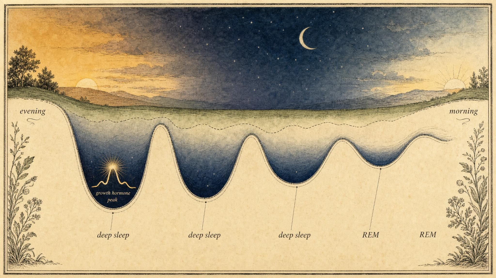
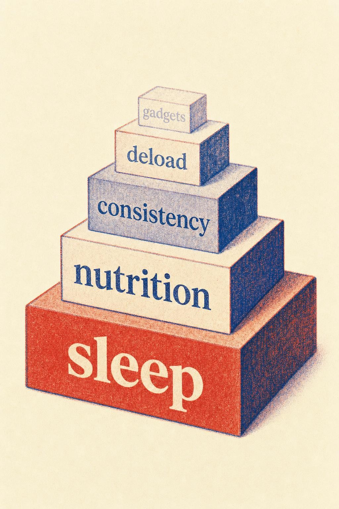

The Lever You're Ignoring
Why sleep sits at the top of the recovery hierarchy, and why nothing flashier can replace it.
Imagine a training program engineered by a team of physiologists, with periodized loading, individualized nutrition, and a battery of recovery gadgets. Now imagine the person running it sleeps six hours a night, not because of insomnia or a diagnosable disorder, just because of a late-scrolling habit, an early alarm, and an inconsistent weekend. That person has, without noticing, capped the ceiling of everything else in the program. The stimulus is being delivered. The adaptation is being quietly declined.
In Chapter 1 we established the central claim of this course: the workout is the stimulus, but adaptation happens during recovery. If that is true, then the obvious next question is which slice of recovery matters most. This chapter answers it plainly. Sleep is not one input among many. It is the largest, cheapest, and most neglected lever most people never pull.
Throughout this chapter you will follow one learner, Owen, a 34-year-old data analyst training for his first marathon, six months out from race day. Owen is disciplined about the things he can see: his mileage log is immaculate, his shoes are rotated on schedule, and he recently bought a percussion massage device after a podcast convinced him it would sharpen his recovery between hard sessions. What he has not touched is his bedtime, which drifts later most nights because his work schedule overlaps a different time zone and because of a phone habit he has not quite named. He is asleep most weeknights by half past midnight and up at quarter past five to run before his workday starts, which puts him around five and a half hours more often than not. He does not feel unwell. He feels, in his own words, fine. Owen is not a patient in this course and he is not a case to be solved. He is a thread we will pull on throughout this chapter, because his situation is the ordinary, undramatic version of the exact mistake this chapter is built to correct.
The recovery window has a biggest slice
Recovery is not a single event. It is a distributed set of processes, hormonal signaling, neural restoration, tissue remodeling, immune activity, and memory consolidation, that unfold across the hours and days after a training stimulus. Sleep is the period during which a disproportionate share of those processes run at their highest intensity. When we say sleep sits at the top of the recovery hierarchy, we mean something specific and mechanistic, not motivational.
Consider the anabolic machinery first. Growth hormone is released in its largest pulses during the first episodes of slow-wave sleep (deep, non-rapid eye movement, or NREM, sleep), and this pulsatility drives downstream insulin-like growth factor 1 (IGF-1) signaling that is central to tissue repair and remodeling (Chennaoui et al., 2020). Growth hormone secretion across a healthy day is not smooth; it arrives in a small number of large pulses, and the single largest of those pulses reliably coincides with the deepest sleep of the night, typically within the first ninety minutes after falling asleep. Curtail sleep, and in particular curtail that first block of slow-wave sleep, and you blunt growth hormone pulsatility and reduce circulating IGF-1. You are not merely tired the next day. You have altered the hormonal environment in which your muscles, tendons, and connective tissue were supposed to rebuild.
The catabolic side of the ledger tells the same story from the opposite direction. Dattilo and colleagues (2011) laid out a coherent mechanistic pathway: sleep debt shifts the endocrine milieu toward catabolism, with elevated cortisol, reduced testosterone, and suppressed IGF-1, which together downregulate protein synthesis and upregulate protein degradation through the FOXO (forkhead box O) / atrogin-1 / MuRF-1 pathway, where MuRF-1 stands for muscle RING-finger protein 1. Put simply, insufficient sleep tilts the molecular balance from building toward breaking down, precisely when you have asked your body to build. This is a genuinely bidirectional problem: sleep loss both turns down the signal that constructs new tissue and turns up the signal that dismantles it, at the same time, in the same underslept body.
This is why the framing of sleep as a lever is not hyperbole borrowed from a wellness brand. It follows directly from endocrinology. You could execute a flawless training block, periodize your loading with real sophistication, and eat with precision, and still forfeit a meaningful share of the adaptation, because the hormonal window in which that adaptation consolidates was too short and too fragmented. Training supplies the stimulus. Sleep supplies the biochemical conditions under which that stimulus becomes stronger, more resilient tissue. Skip enough of the second half, and the first half is, at least partially, wasted effort.
It helps to hold the scale of this in view. A single night of good sleep is not one input sitting alongside protein intake or hydration, roughly equal in weight to either. It is closer to the master switch that determines whether the other inputs matter at all. A learner who nails their protein target on a night when growth hormone pulsatility is blunted by a shortened, fragmented sleep is still supplying amino acids into a system that has partially turned down its own construction crew. The nutrients arrive. The signal to use them well is muted. This is precisely Owen's blind spot: his attention runs to the levers he can hold in his hands, a foam roller, a shaker bottle, a massage device, and skips past the lever that governs how effectively everything else gets used.
None of this requires exotic biology to accept. It requires taking seriously that hormones are not decorative background noise to training; they are the mechanism by which training becomes adaptation in the first place. Chapter 1 established that the workout is a request, not a result. This section adds the missing half of that sentence: the request is granted, or partially denied, according to what happens in the hours a person spends unconscious afterward.

Across a night, deep sleep dominates early cycles, and so does the anabolic pulse." data-image-idx="0" style="display:block;max-width:100%;max-height:75vh;height:auto;width:auto;margin:0 auto;cursor:pointer;">What actually happens across a night
To respect sleep as a lever, you need a working model of its architecture, because the word "sleep" hides a great deal of internal structure. Sleep is not uniform unconsciousness. It cycles through several distinct stages roughly every ninety minutes, repeating four to six times across a typical night (Baranwal et al., 2023).
The non-rapid eye movement (NREM) stages open each cycle. The first stage, N1, is the brief drowsy transition between wakefulness and sleep, lasting only a few minutes. The second, N2, makes up the largest single share of a night's sleep and is where sleep spindles and K-complexes, brief bursts of coordinated brain activity, appear to help consolidate memory and screen out minor external disturbances. The third stage, N3, is slow-wave sleep, sometimes still called deep sleep in older terminology, and it is the stage in which a sleeping person is hardest to rouse, the brain produces its slowest and highest-amplitude waves, and, as the previous section established, growth hormone pulses at its largest. After N3, each cycle moves into rapid eye movement (REM) sleep, marked by vivid dreaming, near-total skeletal muscle paralysis, and a brain activity pattern that in some measures resembles wakefulness more than it resembles the deep sleep that preceded it.
The proportions of these stages are not evenly distributed across the night, and this distribution has a practical consequence that most "just get more sleep" advice quietly ignores: when you truncate sleep matters almost as much as how much you truncate it. Slow-wave sleep is front-loaded into the first third or so of the night, dominating the first one or two cycles before tapering sharply. Rapid eye movement sleep does the opposite: it is brief and nearly absent in the first cycle, then lengthens with each subsequent cycle, so that the longest, richest REM periods arrive in the final two hours before a natural waking time.
Chop an hour off the front of the night by going to bed late, and you disproportionately sacrifice early slow-wave sleep, the growth-hormone-rich, physically restorative portion this chapter has been building its case around. Chop an hour off the back with an early alarm, and you disproportionately sacrifice rapid eye movement sleep, which is heavily implicated in motor learning, emotional processing, and the consolidation of newly practiced skills. For an athlete refining a technical movement, or a student rehearsing anything complex, that final REM-rich stretch is not optional padding at the end of the night. It is where the day's practice gets filed into durable memory. Two people can lose the same single hour of sleep and pay two entirely different physiological bills, depending on which end of the night the hour came from. Owen's pattern, a late bedtime protecting an early alarm, is the front-loaded version of this problem: he is consistently trading away the deepest, most anabolic sleep of the night rather than the lighter sleep at the tail end.
Baranwal and colleagues (2023) catalog the breadth of what sleep accomplishes biologically across a full night: cardiovascular restoration, endocrine regulation, immune function, and memory consolidation all draw on this same architecture. The practical takeaway is that recovery and sleep overlap so heavily that treating them as separate line items on a checklist understates the case. Sleep is not one input that supports recovery among several. It is closer to the venue in which the majority of recovery is transacted, night after night, whether or not the person sleeping is paying it any attention.
One further detail is worth knowing, because it explains why sleep quality is not simply a function of age or willpower: the proportion of a night spent in slow-wave sleep declines naturally across the adult lifespan, and it can be suppressed further by alcohol late in the evening, by inconsistent timing, and by chronic stress. None of this is a moral failing. It is a biological reality that argues for treating the early portion of the night with particular respect, since that is where the scarcest and most valuable stage of sleep is concentrated.
It is also worth being precise about what "waking up during the night" does and does not mean for this architecture. Brief awakenings between cycles are normal and universal; almost everyone surfaces briefly several times a night without remembering it the next morning. The concern is not a two-minute stir while rolling over. The concern is a pattern that repeatedly truncates the early slow-wave-dominant cycles or the late REM-dominant cycles, whether that pattern comes from an external cause, such as an alarm set too early, or an internal one, such as a mind that will not stop rehearsing tomorrow's task list the moment it senses a lighter stage of sleep. Once you can name which stage a given disruption is most likely to be stealing from, sleep stops being a single undifferentiated block of time and starts being a structure you can actually reason about and protect.
Duration and consistency are two different levers
It is tempting to reduce sleep to a single number, hours per night, and stop there. Duration matters enormously, but it is only one axis. The second, consistency (also called sleep regularity), turns out to be a heavyweight in its own right, one most training plans never mention.
Duration: the dose-response evidence
The cleanest experimental evidence on duration comes from Van Dongen and colleagues (2003), a landmark dose-response study conducted at the University of Pennsylvania. Forty-eight healthy adults were randomized to four, six, or eight hours in bed per night for fourteen consecutive days, with psychomotor vigilance and cognitive performance measured continuously under controlled laboratory conditions. Two findings from that study should reshape how anyone thinks about getting by on less.
First, the deficits from chronic restriction to four to six hours accumulated rather than plateaued. By the end of two weeks, the four-hour and six-hour groups showed neurobehavioral impairments comparable to those measured after two to three full nights of total sleep deprivation. Chronic mild restriction, in other words, is not mild. It silently compounds, night after night, into a deficit equivalent to going a full night or two without any sleep at all, even though every one of those fourteen nights technically included some sleep.
Second, and this is the finding that should unsettle every self-assured claim of only needing six hours, the six-hour group largely failed to perceive their own mounting impairment. Their subjective sleepiness ratings rose briefly and then plateaued, while their objective performance kept sliding for the full two weeks. The instrument a person would naturally reach for to judge their own sleep adequacy, namely how they feel, is exactly the instrument that goes unreliable under chronic restriction. Van Dongen and colleagues describe this as a genuine disconnect between subjective and objective decline, and it may be the single most important practical finding in the sleep literature for anyone managing their own training.
Consistency: the regularity signal
If duration were the whole story, a large accelerometer study would find hours slept to be the dominant predictor of health outcomes. It did not. Windred and colleagues (2023), analyzing more than 10 million hours of accelerometer data from 60,977 participants in the UK Biobank, a long-running health study of adults in the United Kingdom, found that sleep regularity, the day-to-day consistency of sleep and wake timing, was a stronger independent predictor of all-cause mortality than sleep duration itself. Higher regularity was associated with a 20 to 48 percent lower all-cause mortality risk across the study period, with comparable reductions in cancer and cardiometabolic mortality specifically.
Mortality is a distal outcome, and it would be a mistake to over-read one observational cohort as a direct training prescription. But the mechanistic logic connects cleanly to the adaptation story this chapter has been building. Endocrine and circadian systems are entrained to expectation, not simply to total hours. A body that reliably knows when sleep is coming can time hormonal release, the core-temperature drop that initiates sleep onset, and overnight metabolic housekeeping to that expectation with precision. A chaotic schedule, eleven at night one day, two in the morning the next, sleeping in heavily on weekends to compensate, keeps the circadian system perpetually re-guessing rather than confidently preparing. For the practical purpose of this course, consistency is not a lesser cousin of duration sitting quietly in its shadow. It is a co-equal lever, and frequently the one people have not even tried to pull, because duration is the number that gets talked about and regularity rarely is.
Owen's five and a half hours on weeknights is one problem. His weekend pattern, sleeping until nearly nine to compensate, is a second, separate problem layered on top of it, because it means his sleep and wake timing swing by more than three hours across a single week. Two people can log the same weekly total of sleep hours and arrive at very different places physiologically, depending on how regular that schedule was. Owen is, without realizing it, running both experiments on himself at once.
The cost that shows up as sickness and injury, not just fatigue
Recovery science tends to focus on the anabolic story, muscle protein balance, hormone pulses, tissue remodeling, because it is the most direct line back to training adaptation. But sleep loss reaches further than the muscle. Fullagar and colleagues (2015), reviewing the athletic literature on sleep and performance, describe a second consequence that deserves equal attention: reduced sleep quality and quantity is associated with an imbalance in the autonomic nervous system, the branch of the nervous system that governs involuntary functions such as heart rate and digestion, that can simulate the symptoms of overtraining syndrome. This matters because overtraining syndrome is often diagnosed, informally and incorrectly, as a training problem requiring a training solution, when the actual driver in a given case may be sleep debt wearing the same clothes.
The same review flags a second pathway worth taking seriously: sleep loss is associated with increases in pro-inflammatory cytokines, the small signaling proteins the immune system uses to coordinate a response, in a pattern that can promote immune system dysfunction. Baranwal and colleagues (2023) situate this within a broader picture in which sleep supports immune regulation as one of its core, non-negotiable functions, alongside cardiovascular restoration and memory consolidation. Put the two findings together and a practical, uncomfortable conclusion follows: a person who is chronically underslept is not only leaving adaptation on the table, they are plausibly running a mildly suppressed and dysregulated immune system precisely while asking their body to absorb repeated training stress. This is one reason a hard training block paired with a bad sleep week so often ends in a cold, a minor illness, or a nagging injury that seems to arrive from nowhere. It rarely is nowhere. It is usually a sleep-shaped hole in the body's capacity to defend and repair itself, arriving at the same time as an elevated training load that leaves no margin for error.
None of this means every illness or injury traces back to sleep. Many do not. But it does mean sleep debt belongs on the list of plausible contributors whenever recovery seems to be lagging behind expectation, a nagging injury will not resolve, or minor illnesses keep interrupting a training block. It is one of the few contributors on that list a learner can actually do something about without special equipment, a coach, or a clinic visit.
There is a practical reason this deserves its own section rather than a single sentence tucked inside the performance discussion. Most people evaluating their own recovery instinctively check for soreness, fatigue, and whether their numbers on the bar or the clock are moving in the right direction. Far fewer people think to check whether they have been getting sick more often than usual, or whether a minor strain that should have resolved in a week has instead lingered for a month. Those two signals, sickness frequency and stalled tissue healing, are exactly where a chronic sleep shortfall tends to surface first, often before it shows up anywhere in a training log. Learning to read them as recovery data, rather than as unrelated bad luck, is part of what separates a trainee who understands their own physiology from one who is simply pushing harder and hoping.
Sleep debt: a balance that only partly clears
The widget above is a deliberately simplified model, but it encodes two robust findings from the evidence just reviewed. The first is that shortfall accumulates, a point straight from Van Dongen and colleagues (2003). Each night below target adds to a running deficit, and the neurobehavioral cost tracks the cumulative total, not merely the previous night's number. This is why "I will be fine, I slept okay last night" is such a treacherous line of reasoning midway through a demanding week; last night is not the number that predicts how you will perform today.
The second finding is subtler and, for the purposes of training and recovery, more important: catch-up sleep only partially repays the debt. Two long weekend nights blunt the accumulated impairment but do not restore a person to baseline, and they do nothing to recover the specific adaptation windows already missed during the week. You cannot retroactively hold a growth hormone pulse that failed to fire on a Tuesday night. This asymmetry, easy to accrue, slow and incomplete to repay, is exactly the structure of the broader recovery debt concept this course develops fully in Chapter 8. Sleep debt is simply its clearest, best-measured instance, which is why it earns the interactive model above rather than a single paragraph of description.
Try running Owen's actual week through the sliders: five and a half hours on weeknights, a late Friday night before a long run, and two generous ten-hour weekend nights layered on top. The model will show a debt that shrinks but does not disappear, and a week's worth of missed anabolic windows that no amount of Saturday sleep can retrieve. That is not a design flaw in the widget. It is the finding.
The performance and adaptation costs are real and measured
Skeptics reasonably ask whether these mechanisms actually show up in performance outcomes rather than remaining a laboratory curiosity. They do, in both directions.
On the loss side, Fullagar and colleagues (2015) reviewed the athletic literature and found a consistent pattern: sleep loss, whether acute deprivation or chronic restriction, produces slower and less accurate cognitive performance and reduced sport-specific performance, alongside altered physiological stress responses to exercise. The effects are not confined to how an athlete subjectively feels. They show up in reaction time, in shooting or passing accuracy, and in the body's hormonal handling of the training load itself, which loops back to the anabolic and catabolic machinery covered earlier in this chapter.
On the gain side, the evidence is even more striking, because it is a rare experimental demonstration conducted in actively competing athletes rather than sedentary volunteers. Mah and colleagues (2011) had eleven Stanford varsity basketball players extend their nightly sleep to a minimum of ten hours in bed for five to seven weeks. Compared with their own habitual-sleep baseline, the same players ran a significantly faster timed sprint, improving from 16.2 to 15.5 seconds, improved free-throw shooting accuracy by roughly 9 percent and three-point shooting accuracy by a similar margin, reacted faster on a standardized vigilance task, and reported better mood along with less daytime sleepiness. These were already elite, highly trained athletes with a full-time coaching staff and structured programming. The gains did not come from a new drill, a supplement, or a piece of recovery equipment. They came from more sleep, applied consistently, for five to seven weeks.
Zoom out to the whole intervention literature and the ranking holds. Cunha and colleagues (2023), in a systematic review of sleep interventions and athletic performance conducted according to the Preferred Reporting Items for Systematic Reviews and Meta-Analyses (PRISMA) guidelines, concluded that increasing sleep duration, whether through extended nighttime sleep or through napping, was the single most effective intervention identified across the studies reviewed for improving both physical and cognitive performance. The same review flags an uncomfortable irony worth sitting with: elite athletes frequently sleep less than the seven to eight hours they themselves report needing to feel rested. The people with the most to gain from pulling the top lever are often, by their own admission, the ones neglecting it hardest.
This is Owen's exact situation, scaled down from elite sport to recreational marathon training but running on the identical mechanism. He does not need a faster shoe or a new massage tool to run better splits on tired legs. Based on the mechanisms and evidence in this chapter, the more probable lever, and the one his logbook has never tracked, is the five and a half hours he is currently treating as sufficient.

The honest hierarchy: the biggest block is the one people decorate last." data-image-idx="1" style="display:block;max-width:100%;max-height:75vh;height:auto;width:auto;margin:0 auto;cursor:pointer;">The honest hierarchy, and why sleep is the benchmark
The ranking board makes a point this course will return to repeatedly: most people's intuitive hierarchy overweights the visible and the novel, the ice bath, the massage, the sauna, and underweights the boring foundation sitting beneath all of it. When the evidence-weighted overlay drops sleep to the top, the gap between intuition and evidence is usually large, and it is instructive precisely because it is uncomfortable to look at directly.
Here is the honest framing this course will hold for the remainder of its chapters: no supplement, gadget, or recovery modality can compensate for insufficient sleep. This is not a rhetorical flourish inserted to sound disciplined. It follows directly from the mechanisms already covered. If the anabolic hormonal environment and the tissue-remodeling window are largely governed by sleep architecture (Dattilo et al., 2011; Chennaoui et al., 2020), then any intervention layered on top of chronic sleep debt is decorating a foundation that is already compromised. A massage device cannot restore a blunted growth hormone pulse. An ice bath cannot repay a missed slow-wave-sleep cycle. Neither is worthless; both simply operate several rungs down a ladder whose top rung is sleep.
In Chapter 6 we will grade the flashier modalities honestly, one by one, against real evidence rather than marketing claims. Sleep is the benchmark against which every one of them will be measured in that chapter. If a modality cannot beat the simple, unglamorous act of sleeping an extra hour, it does not earn a place near the top of your board, no matter how it is packaged or priced.
This is the honest hierarchy Owen has not yet built for himself. His massage device is not doing nothing; small circulatory and perceptual benefits are plausible. But it is competing for attention with a lever that outperforms it by a wide margin and costs nothing beyond a slightly earlier bedtime. Rank ordering matters because attention and willpower are finite. Spend both on a lower-ranked lever while the top-ranked one sits unpulled, and the math of recovery will not work out, no matter how well-intentioned the effort is.
It is worth naming why this hierarchy is so consistently inverted in practice. The flashier modalities are easy to sell, easy to photograph, and easy to feel in the moment: an ice bath produces an immediate, unmistakable sensation, and a massage device produces an immediate, unmistakable sound and feel against tight tissue. Sleep produces none of that theater. Its benefits accrue quietly, over days and weeks, in the form of numbers that move slightly in the right direction and injuries that fail to show up rather than dramatic experiences a person can point to and say that fixed me. A recovery industry built to sell products has little incentive to lead with the intervention that requires no purchase at all, and a learner who has internalized the evidence-weighted hierarchy is, in a very real sense, protected from a great deal of that industry's marketing before it ever reaches them.
Levers you control, and the line you should not cross
This course keeps a promise: it stays practical and evidence-based without drifting into clinical sleep-disorder territory. That distinction matters here more than almost anywhere else in the curriculum. There is a meaningful difference between sleep hygiene levers a learner genuinely controls and problems that warrant professional evaluation, and confusing the two in either direction causes real harm, either by chasing a medical problem with a bedtime routine or by pathologizing an ordinary bad habit.
The levers well supported by the hygiene literature (Baranwal et al., 2023) are unglamorous and high-yield, which is exactly why they are so often skipped in favor of something that feels more like an intervention.
Timing and consistency
Anchor your wake time first; it is the strongest circadian cue a person controls directly, and let bedtime follow from it rather than the other way around. Regularity, as Windred and colleagues (2023) demonstrated, is a lever in its own right, so a consistent but imperfect schedule often outperforms a theoretically perfect but erratic one.
Light
Morning light exposure entrains the circadian clock forward; evening light, especially bright and blue-shifted light from screens, delays it. The practical asymmetry is simple to state: seek light early in the day, and dim it deliberately late in the evening. This is one of the few levers that costs nothing and moves the underlying biology directly, rather than merely making sleep feel more pleasant.
Environment
Cool, dark, and quiet is not a wellness cliché; it aligns with the core-temperature drop that initiates sleep onset and protects the fragile later cycles, particularly that valuable morning REM stretch, from disruption. A slightly cool room and genuine darkness, meaning no glowing devices and curtains heavy enough to block outside light, are inexpensive upgrades with a real physiological return.
Behavioral inputs
Caffeine timing deserves real respect given its long half-life; a dose taken in the early afternoon can still be measurably present at bedtime for a meaningful share of people. A consistent wind-down routine and keeping the bed associated with sleep rather than with work, scrolling, or watching anything on a screen all belong firmly in the controllable column.
And now the line. If a learner has genuinely optimized every lever above and still cannot sleep, that is meaningfully different from a learner who has not yet tried them. There is a further category worth naming explicitly: loud snoring with witnessed pauses in breathing, persistent insomnia despite good hygiene sustained over weeks, unrefreshing sleep no matter how many hours are logged, or excessive daytime sleepiness that hygiene changes do not touch. Each of these is a sign, not a diagnosis, and each warrants professional evaluation rather than a longer trial of home remedies.
This chapter equips a learner to pull the levers they control and, just as importantly, to recognize when a problem has moved beyond them. Framing dysfunction as a sign that deserves qualified attention, never as something to self-diagnose or self-treat, is the same principle this course applies to pain and to every other physiological warning signal covered in later chapters.
The subjects restricted to six hours a night for two weeks were, by the end, as impaired as if they had gone two full nights without sleep, yet they reported feeling only slightly sleepy.
Paraphrasing Van Dongen et al. (2003)
Case study: Owen and the number he never tracked
Run Owen's situation through this chapter and the plateau stops looking mysterious. His weeknight sleep sits well inside the range Van Dongen and colleagues (2003) restricted their six-hour group to, and his pattern has been running for months, not the fourteen days of that study. If the deficits in that experiment compounded to resemble two to three nights of total sleep deprivation within two weeks, a comparable multi-month pattern is not a minor inconvenience sitting at the margins of his training. It is plausibly the dominant variable in his plateau, ahead of anything a massage device could meaningfully move.
His specific pattern, a late bedtime protecting an early alarm, is also the worse of the two ways to lose an hour of sleep, because it disproportionately trims the early, slow-wave-sleep-dominant portion of the night rather than the lighter sleep nearer morning. That is precisely the stage in which growth hormone pulses hardest and tissue remodeling is most active. His recurring Achilles tightness, which he has been treating with the massage device and additional stretching, is consistent with, though of course not proof of, a tissue that is not being given its full nightly repair window, session after session, for months.
Add the weekend swing, roughly a nine at night to five in the morning weekday schedule against a much later weekend one, and Windred and colleagues (2023) would flag a second, independent problem layered on top of the first: an irregular schedule that keeps his circadian system re-guessing rather than confidently preparing for sleep and for training. Two separate, well-supported mechanisms are working against him at once, and neither shows up anywhere in his meticulous mileage log.
None of this tells us whether Owen's Achilles tightness needs a clinician's attention; a recurring, localized pain that persists despite adequate recovery is exactly the kind of sign this course flags for professional evaluation rather than self-management, and nothing here substitutes for that assessment. What this chapter can responsibly offer Owen is a corrected sense of where the highest-yield lever actually sits. Before adding a second recovery gadget, the evidence-weighted hierarchy this chapter has built points to one unglamorous, unpaid intervention: protecting the first hour of his night and narrowing the gap between his weekday and weekend schedule. That change costs him nothing except an earlier bedtime, and unlike the massage device, it is supported by a mechanism that reaches every tissue in his body, not just the ones within reach of a handheld tool.
Key Takeaways
- Sleep is the primary recovery lever, not one input among many: it is the period when anabolic signaling (growth hormone and insulin-like growth factor 1) peaks and catabolic degradation is held in check (Chennaoui et al., 2020; Dattilo et al., 2011).
- Sleep architecture matters, not just total hours: slow-wave sleep is front-loaded early in the night and rapid eye movement sleep is back-loaded near morning, so losing an hour at the start of the night and losing an hour at the end cost the body very different things.
- Duration and consistency are distinct levers. Chronic mild restriction compounds into deficits rivaling total deprivation (Van Dongen et al., 2003), while sleep regularity independently predicts health outcomes even beyond duration (Windred et al., 2023).
- Sleep loss carries a measurable immune and injury cost, not only a performance cost: reduced sleep is linked to autonomic imbalance resembling overtraining syndrome and to a pro-inflammatory shift that can impair immune defense (Fullagar et al., 2015).
- Sleep debt accrues easily and repays slowly and incompletely; catch-up weekends blunt but do not erase it, foreshadowing the broader recovery debt idea explored in Chapter 8.
- The performance stakes are measured, not theoretical: sleep extension improved elite athletes with no other change (Mah et al., 2011), and sleep duration was the single most effective performance intervention identified in a systematic review (Cunha et al., 2023).
- No supplement or modality compensates for insufficient sleep, which is why sleep serves as the benchmark against which Chapter 6 grades everything flashier.
- Distinguish hygiene levers you control (timing, light, consistency, environment) from signs, such as witnessed breathing pauses, persistent insomnia, or unrefreshing sleep, that warrant professional evaluation rather than self-management.
If sleep is the largest slice of the recovery window, the next question is what fills the rest of it. In Chapter 3 we turn to nutrition and the fueling of adaptation, the second-largest lever, and examine how protein, energy availability, and timing either amplify or squander the anabolic window that sleep opens. Keep your ranking board handy; we will be moving blocks around it for the rest of the course.
References
Baranwal, N., Yu, P. K., & Siegel, N. S. (2023). Sleep physiology, pathophysiology, and sleep hygiene. Progress in Cardiovascular Diseases, 77, 59-69. https://doi.org/10.1016/j.pcad.2023.02.005
Chennaoui, M., Léger, D., & Gomez-Merino, D. (2020). Sleep and the GH/IGF-1 axis: Consequences and countermeasures of sleep loss/disorders. Sleep Medicine Reviews, 49, 101223. https://doi.org/10.1016/j.smrv.2019.101223
Cunha, L. A., Costa, J. A., Marques, E. A., Brito, J., Lastella, M., & Figueiredo, P. (2023). The impact of sleep interventions on athletic performance: A systematic review. Sports Medicine, Open, 9(1), 58. https://doi.org/10.1186/s40798-023-00599-z
Dattilo, M., Antunes, H. K. M., Medeiros, A., Mônico Neto, M., Souza, H. S., Tufik, S., & de Mello, M. T. (2011). Sleep and muscle recovery: Endocrinological and molecular basis for a new and promising hypothesis. Medical Hypotheses, 77(2), 220-222. https://doi.org/10.1016/j.mehy.2011.04.017
Fullagar, H. H. K., Skorski, S., Duffield, R., Hammes, D., Coutts, A. J., & Meyer, T. (2015). Sleep and athletic performance: The effects of sleep loss on exercise performance, and physiological and cognitive responses to exercise. Sports Medicine, 45(2), 161-186. https://doi.org/10.1007/s40279-014-0260-0
Mah, C. D., Mah, K. E., Kezirian, E. J., & Dement, W. C. (2011). The effects of sleep extension on the athletic performance of collegiate basketball players. Sleep, 34(7), 943-950. https://doi.org/10.5665/sleep.1132
Van Dongen, H. P. A., Maislin, G., Mullington, J. M., & Dinges, D. F. (2003). The cumulative cost of additional wakefulness: Dose-response effects on neurobehavioral functions and sleep physiology from chronic sleep restriction and total sleep deprivation. Sleep, 26(2), 117-126. https://doi.org/10.1093/sleep/26.2.117
Windred, D. P., Burns, A. C., Lane, J. M., Saxena, R., Rutter, M. K., Cain, S. W., & Phillips, A. J. K. (2023). Sleep regularity is a stronger predictor of mortality risk than sleep duration: A prospective cohort study. Sleep, 47(1), zsad253. https://doi.org/10.1093/sleep/zsad253